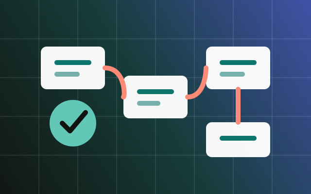

先拆任务边界
一个稳定系统通常会把采集、控制、通信、日志和推理拆成不同任务。任务边界越清楚，调试时越容易定位是调度问题、资源竞争，还是外设时序问题。
优先级表达实时性
优先级不是谁重要谁最高，而是谁对时间最敏感谁更高。传感器采样、控制环和通信收包往往比日志输出更需要确定性。
把偶现问题变成可观测问题
给关键路径加时间戳、队列水位、堆栈余量和错误计数。嵌入式调试最怕“感觉卡了一下”，最好让系统自己留下证据。
Embedded · 2026-04-27
实时系统的难点不只是写驱动，而是让任务、中断和共享资源在可预期的时间里协同。

一个稳定系统通常会把采集、控制、通信、日志和推理拆成不同任务。任务边界越清楚，调试时越容易定位是调度问题、资源竞争，还是外设时序问题。
优先级不是谁重要谁最高，而是谁对时间最敏感谁更高。传感器采样、控制环和通信收包往往比日志输出更需要确定性。
给关键路径加时间戳、队列水位、堆栈余量和错误计数。嵌入式调试最怕“感觉卡了一下”，最好让系统自己留下证据。